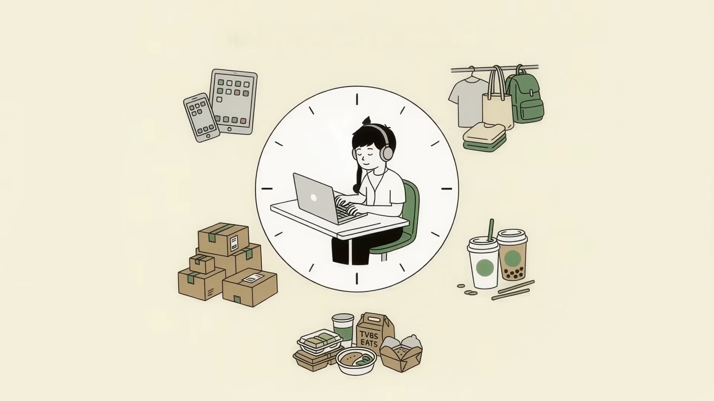
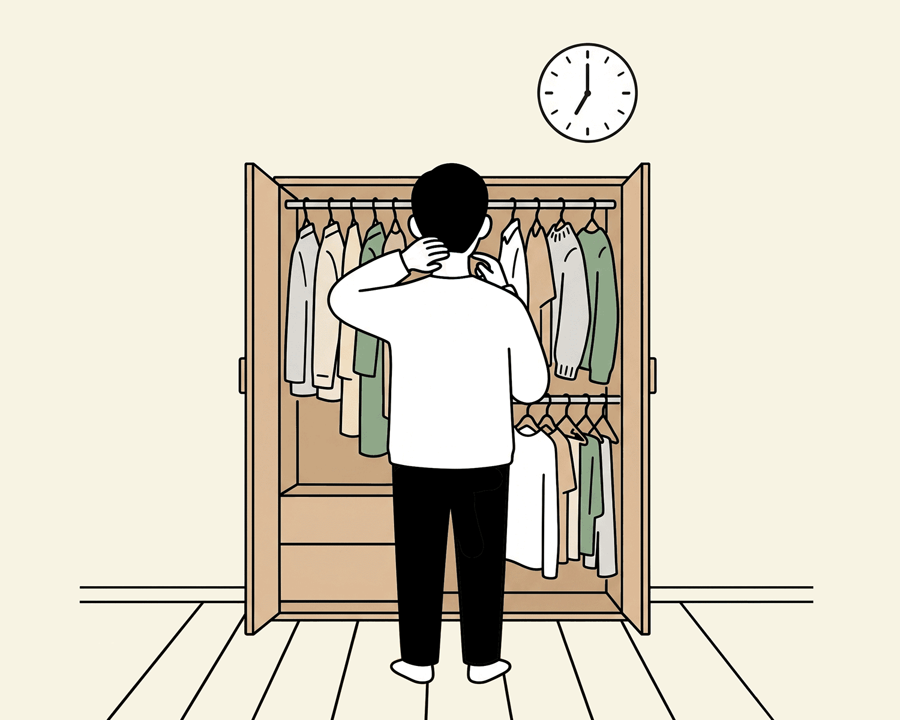
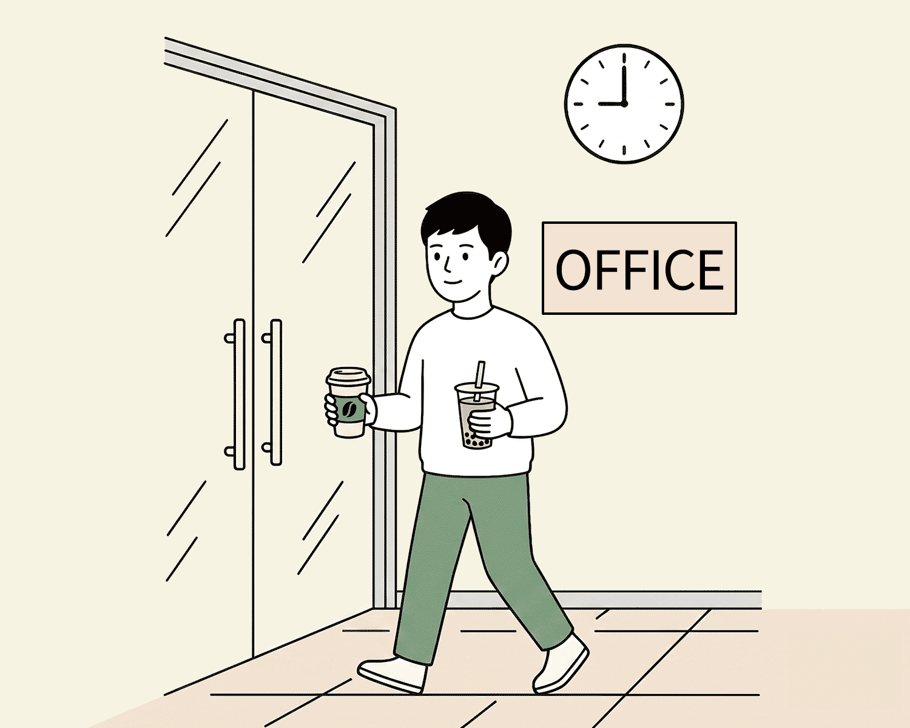
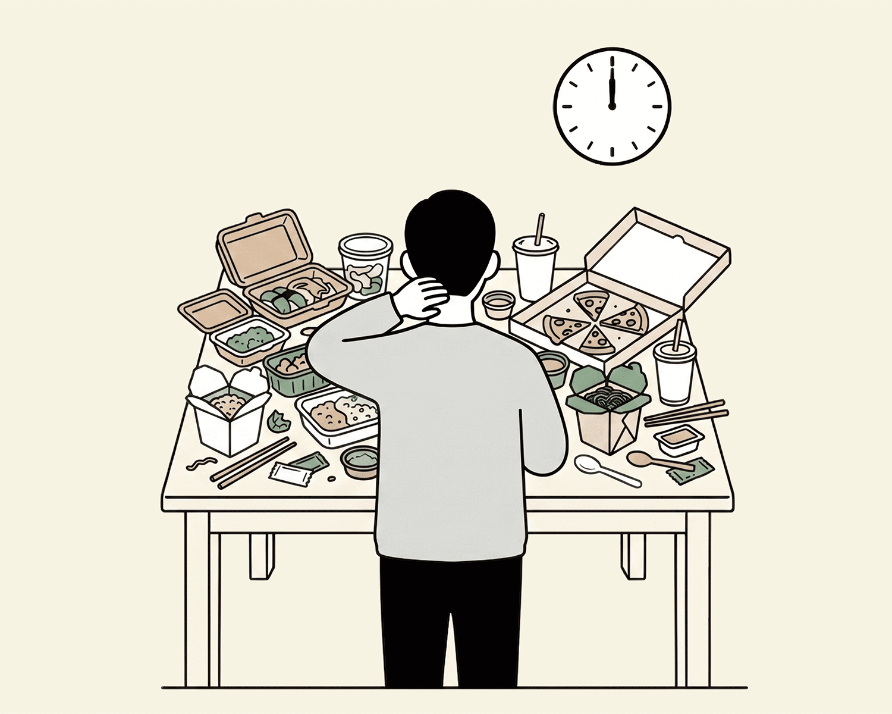
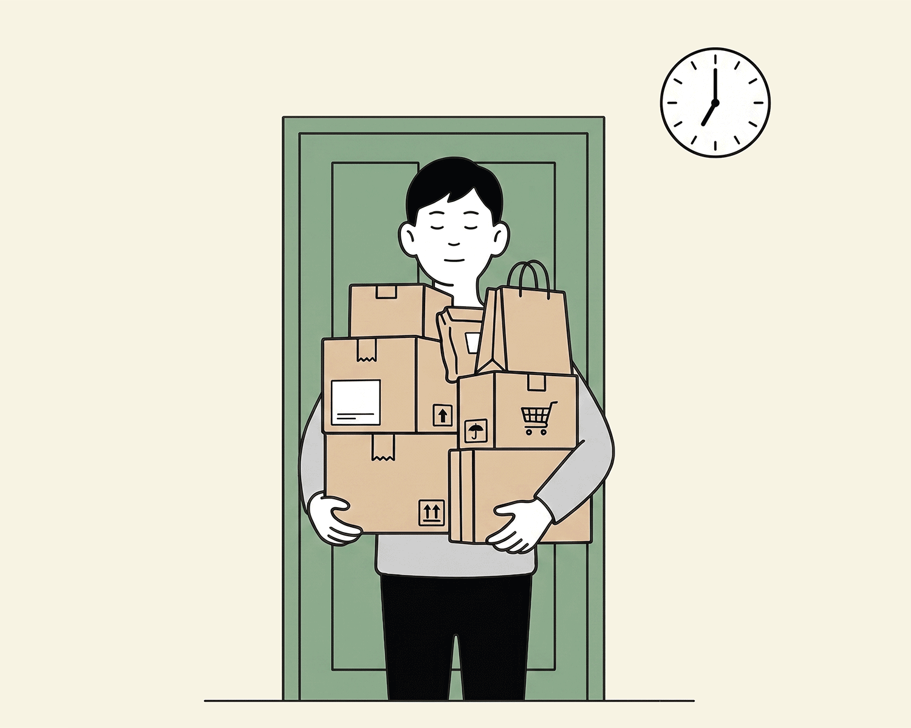
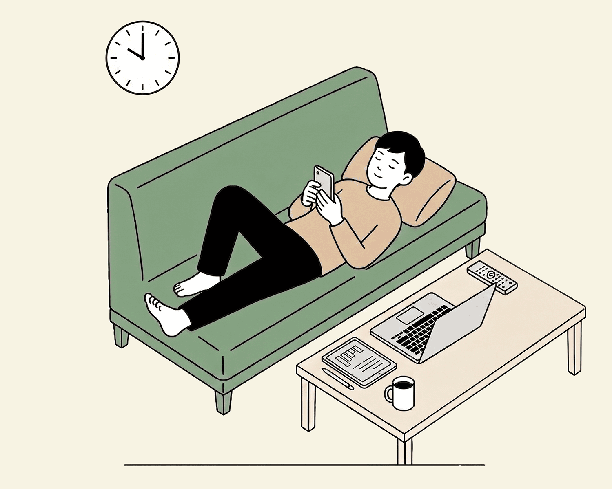
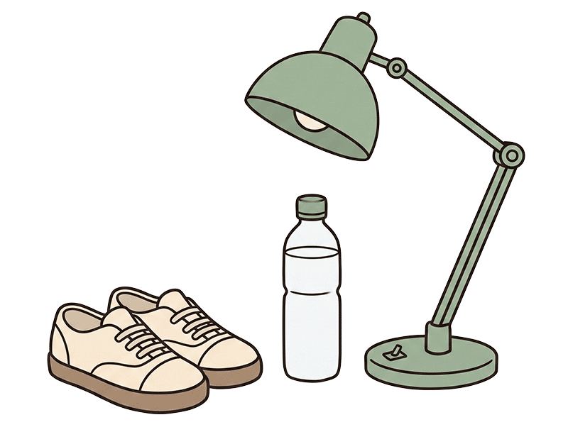
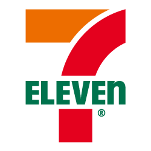
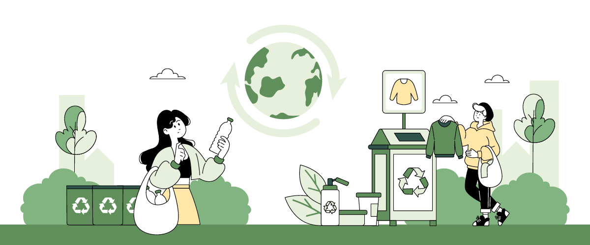

早上從爆滿衣櫃裡，好難挑出一套衣服出門上班；九點進公司前，要先去超商買杯外帶咖啡提神，才有力氣開始一天的社畜生活；中午十二點和同事點外送，餐盒、塑膠袋、免洗餐具跟著送上桌；下午茶時間，再來一杯手搖飲療癒自己；下班順道去蝦皮領包裹，回家後累得只想躺平滑手機、逛網拍、追劇。
日常的舊衣、外帶杯、餐盒、包材到廚餘都在不知不覺被丟棄了，據環境部「環境統計查詢網」廢棄物生產量統計，每人每天產出垃圾平均約1.4公斤，其中約6成是可再被利用的，為了讓台灣資源治理從「垃圾回收」邁入「資源循環」，立法院2026年6月2日三讀通過《資源循環推動法》，產品從設計、生產、消費到回收再利用，納入循環新框架，讓昨天的垃圾，變成明日綠金！
你的一天，丟掉多少循環綠金？
如何「轉廢為寶」？TVBS GOOD帶你先從五種日常情境出發，帶你找出每天1.4公斤垃圾裡，哪些是可再利用的循環資源，它們是值錢的可別浪費了。
同時透過最新「日常循環行為大調查」重點數據，了解台灣民眾對循環經濟接受度有多少？哪些減塑行動已落實？哪些地方還須再努力？現在就跟著TVBS GOOD從日常生活中一起「轉廢為寶」！
AM 07:00

台灣一年有8.2萬公噸廢棄衣物，平均每分鐘500件衣服被丟掉。
59%
民眾會把舊衣丟進「舊衣回收箱」
16%二手轉售或送人，13%塞在衣櫃深處，8%當一般垃圾丟棄，僅4%會拿去品牌門市「衣to衣」回收。
AM 09:00

國人每年用掉40億個飲料杯，疊起來等於118萬座台北101大樓。
53%
民眾會自帶環保杯，可省5元。
45%仍習慣店家一次性紙杯/塑膠杯，僅2%使用循環杯。
PM 12:00

全台一天產生2,115公噸廚餘，重量等同於500萬個便當被丟棄，並製造1,400公噸免洗餐具垃圾。
72%
民眾會把廚餘倒進廚餘桶，且清洗容器後，再丟紙容器或塑膠回收。
21%簡單處理，餐盒殘渣直接丟回收桶，7%放棄分類全部當一般垃圾丟掉。
PM 19:00

網購每年消耗2.2億個包裝袋、包裝盒，堆疊起來有4,000座台北101大樓
40%
會保留紙箱氣泡袋重複使用
38%壓扁紙箱、塑膠氣泡袋當一般垃圾，20%拿去指定據點回收。
PM 20:00

全球每年電子垃圾高達5,360萬噸，其中至少含有價值100億美金的貴金屬。
66%
民眾為了換回饋會到超商、電信門市做電子廢棄物回收。
27%交由清潔隊或資源回收，7%當一般垃圾。
T觀點
《資源循環推動法》6月通過，台灣邁入資源循環新時代，聚焦高科技、電子、塑膠、建築等6大關鍵領域，預計超過1,700億元「轉廢為寶」的綠色商機，《T觀點》主持人莊開文對談台灣永續能源研究基金會董事長簡又新和其他專家，解析循環經濟致勝關鍵。


主視覺｜AI生成示意圖
部分圖片授權提供｜達志影像Shutterstock・各品牌
